PatchGoblin for Questi legt een planningsvenster over je Questi-agenda: lesfiches slepen, weken vooruit plannen, lesdoelen afdrukken. Hieronder: wat het kan, hoe je het installeert (ongeveer vijf minuten) en hoe je ermee werkt.
Windows-pc
Chrome, Edge of Brave
Je gewone Questi-login
Gratis, niet van Questi zelf
Op een pc van school? Daar heeft de IT-dienst het laden van eigen extensies soms afgezet. Lukt stap 3 niet omdat “Ontwikkelaarsmodus” grijs is, gebruik dan je eigen computer.
Wat het kan
Twee weken in één blik
Deze week en volgende week onder elkaar. Sleep lesfiches uit je lijst op je lesuren; de lijst toont wat je al gaf en wat nog niet.
Eén keer controleren
Alles wordt eerst klaargezet. Pas na jouw nakijken en goedkeuren gaat het naar Questi — een lesuur uit een reeks altijd alleen voor die ene week.
Lesdoelen
WEET / KEN / KAN per les, bewaard in de lesfiche zelf. Zie per week welke lessen nog geen doelen hebben en vul ze snel in.
Je lesfiches beheren
Je hele bibliotheek als tabel met tagboom: titels, tags, leerjaren en doelen aanpassen, en nieuwe fiches maken met de Op.Stap-leerplandoelen.
Afdrukken
Je week op A4 in de kleuren van je vakken: als weekplanning, met schrijflijnen voor de lesdoelen, of als tijdlijn met een afvinklijst. Ook als PDF.
Vooruit plannen
Blader weken verder en je wijzigingen blijven klaarstaan; vakantieweken worden overgeslagen. Methodevoortgang toont welke lessen van een methode je al gaf.
Installeren
Download het installatiebestand
Open install.bat op GitHub en klik rechtsboven op het downloadpijltje (“Download raw file”).
Je browser kan vragen of je het bestand wil behouden: kies “Behouden”.
github.com/RareGoudvis/PatchGoblin/…/install.bat
install.batRaw⧉⤓
@echo off REM PatchGoblin - installer …
Dubbelklik install.bat
Een zwart venster haalt PatchGoblin binnen en zet het in een vaste map. Het kopieert die map naar je klembord en opent de extensiepagina van je browser.
Toont Windows “Windows heeft uw pc beschermd”? Klik Meer info en dan Toch uitvoeren. Het bestand doet niets anders dan downloaden en kopiëren.
install.bat
=== PatchGoblin installeren (versie: main) ===Downloaden van GitHub (main)…Geinstalleerd in: C:\Users\…\AppData\Local\PatchGoblinDie map staat nu op je klembord.
Zet Ontwikkelaarsmodus aan
Op de extensiepagina die net openging: zet de schakelaar Ontwikkelaarsmodus aan. In Chrome en Brave staat hij rechtsboven, in Edge links onderaan.
Ging de pagina niet open? Typ chrome://extensions in de adresbalk (Edge: edge://extensions).
chrome://extensions
ExtensiesOntwikkelaarsmodus
Uitgepakt ladenInpakkenUpdaten
Klik “Uitgepakt laden” en plak de map
Klik Uitgepakt laden. In het venster dat opent: klik bovenaan in het adresvak, druk Ctrl+V en Enter, en klik Map selecteren.
Klembord leeg? Plak dan dit pad:
%LOCALAPPDATA%\PatchGoblin
Map met extensie selecteren
C:\Users\…\AppData\Local\PatchGoblin
iconsmanifest.json · planner.js · …
Map selecterenAnnuleren
Herlaad je Questi-agenda
Ga naar je agenda in Questi en druk F5. Bovenaan staat nu de knop PatchGoblin. Openen kan ook met Alt+P.
De eerste keer helpt een korte wizard je op weg (zie hieronder).
questi.com/…/calendar
Agenda · Vandaag ‹ ›PatchGoblin
Is install.bat geblokkeerd? Eén regel in PowerShell
Weigert je browser het bestand, toont Windows “Windows heeft uw pc beschermd”, of blokkeert je school .bat-bestanden? Dan hoef je niets te downloaden:
Klik op Start, typ PowerShell en druk Enter.
Kopieer deze regel, plak hem in het blauwe venster (rechtermuisklik plakt) en druk Enter: irm https://raw.githubusercontent.com/RareGoudvis/PatchGoblin/main/install.ps1 | iex
Het doet hetzelfde als install.bat: het zet PatchGoblin in %LOCALAPPDATA%\PatchGoblin, kopieert die map naar je klembord en opent de extensiepagina. Ga verder bij stap 3 hierboven.
Bijwerken: plak dezelfde regel opnieuw. Staat PatchGoblin er al, dan kijkt het de download eerst na, maakt het een back-up en zet het die terug als het vervangen mislukt — net als update.bat.
Lukt ook dat niet? Handmatig installeren
Blokkeert je computer ook PowerShell, of heb je een Mac? Dan installeer je met de hand — het resultaat is hetzelfde.
Pak de ZIP uit naar een vaste map die je niet meer verplaatst of verwijdert, bv. Documenten\PatchGoblin. Laat ze niet in Downloads staan: de browser leest de extensie elke keer uit die map.
Open de extensiepagina (chrome://extensions, in Edge edge://extensions) en zet Ontwikkelaarsmodus aan.
Klik Uitgepakt laden en kies de map waarin manifest.json staat. Na het uitpakken is dat vaak één map dieper, bv. PatchGoblin-main.
Herlaad je Questi-agenda met F5.
Bijwerken zonder update.bat: download de ZIP opnieuw, vervang de bestanden in dezelfde map, klik op de extensiepagina op ↻ bij PatchGoblin en herlaad Questi.
De eerste keer
De wizard
Vakken: vink aan welke van je Questi-tags echte vakken zijn (wiskunde, taal …).
Lesrooster: kies per lesuur het vak. PatchGoblin stelt voor wat het al in je agenda ziet; bevestig of pas aan. Gym en zwemmen zet je zelf.
Agenda: “Vak als beschrijving” zet je alleen aan als je klaswebsite (bv. Enderklas) de beschrijving als vak toont.
Alles kan later nog in Instellingen.
Goed om te weten
Niets gaat naar Questi voor je op Controleer klikt en de wijzigingen goedkeurt.
Een lesuur uit een reeks wordt altijd los aangepast, nooit de hele reeks.
Je instellingen staan in je browser. Op een andere computer neem je ze mee via Instellingen → Delen & back-up.
PatchGoblin is een onafhankelijk project; Questi zelf ondersteunt het niet.
Iets mis? Open Debug onderaan de zijbalk: de Zelftest zegt wat er scheelt. Opslaan als .json maakt een bestand om mee te sturen met je vraag (zonder wachtwoord of cookies).
Handleiding
De schermafbeeldingen tonen PatchGoblin met verzonnen voorbeeldgegevens (een fictieve juf en school). Bij jou staan er je eigen vakken, lesuren en lesfiches.
Openen
Op je Questi-agenda staat de knop PatchGoblin in de werkbalk. Klik hem, of druk Alt+P. Het pijltje ernaast opent een snelmenu: Plannen, Lesfiches, Afdrukken deze week en Instellingen.
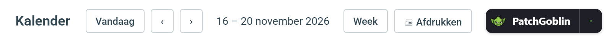
De PatchGoblin-knop in de werkbalk van Questi
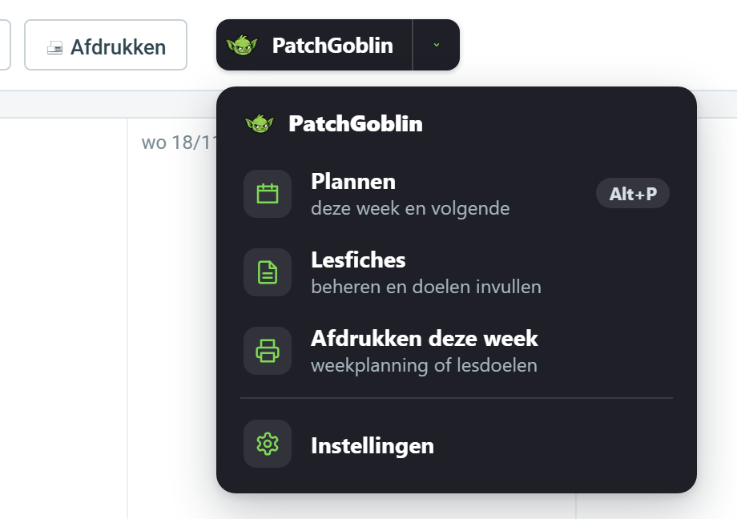
Het snelmenu achter het pijltje
Plannen
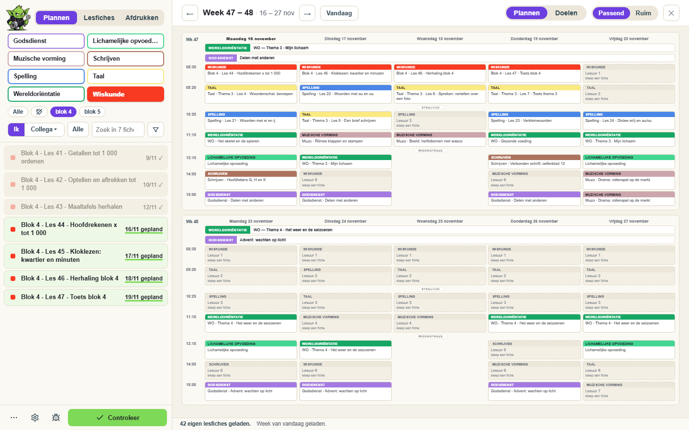
Plannen: links je lesfiches, rechts deze week en volgende week
Rechts staan deze week en volgende week. Elke kaart is een lesuur: bovenaan het vak in de kleur van je Questi-tag, daaronder de les. Een gestippelde kaart heeft nog geen lesfiche. ← → bladert een week, Vandaag brengt je terug.
Links je lesfiches. Kies een vak, verfijn met de subtags, of kies Ik / Collega voor de fiches van een collega of een methode. Filter klapt zoeken, leerjaar en sorteren open.
Achter elke fiche: groen gepland (staat in deze weken), een grijs ✓ (dit schooljaar gegeven), of de laatste datum / nooit.
Sleep een fiche op een lesuur om ze te plannen. Klik een lesuur om een fiche te kiezen, de titel of het vak te wijzigen, het leeg te maken of er Lichamelijke opvoeding / zwemmen van te maken. Sleep een kaart naar een ander lesuur om te verplaatsen of te wisselen. Ctrl+Z draait terug.
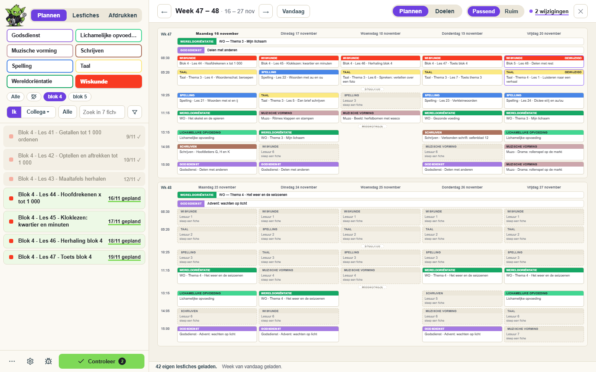
Klaargezette wijzigingen: groene kaarten en een teller
Wat je verandert wordt eerst klaargezet: de kaart krijgt een groene rand en bovenaan staat hoeveel wijzigingen er wachten. Blader gerust verder en plan een hele maand — klaargezette wijzigingen blijven staan tot je ze wegschrijft.
Menu Alles
Kopieer vorige week · Titels opschonen (haalt de “* … (1)” van Questi uit titels) · Vakken herstellen · Ongedaan maken · Vernieuwen · Balans (lesuren per vak) · Zoek in alle lesfiches · Lesfiches van collega’s · Methodes · Methodevoortgang
Themarijen. Hele-week-items zoals WO of Godsdienst staan als brede balk bovenaan elke week. Leg er de themafiche van die week in.
Controleren en wegschrijven
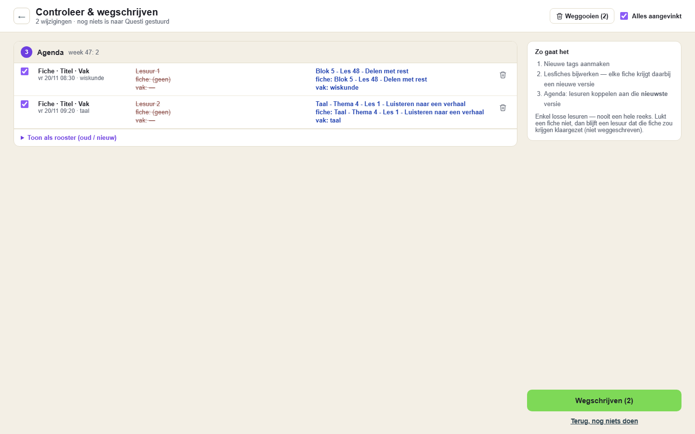
Controleer: elke wijziging op een rij, met een vinkje
Klik Controleer (onderaan de zijbalk). Je ziet alles wat klaarstaat, in de volgorde waarin het naar Questi gaat: nieuwe tags, aangepaste lesfiches, dan de lesuren.
Wat je uitvinkt, blijft klaargezet voor later. Het vuilbakje zet een lesuur terug zoals het in Questi staat. Toon als rooster toont voor en na naast elkaar.
Klik Wegschrijven. Daarna herlaadt Questi en opent PatchGoblin vanzelf weer op dezelfde weken.
Lukt iets niet, dan zegt het venster wat, en blijft dat klaargezet. Antwoordt Questi niet, dan kijkt PatchGoblin zelf na of het toch aankwam; lukt ook dat niet, dan staat het er als onzeker bij — kijk het dan even na in Questi.
Doelen
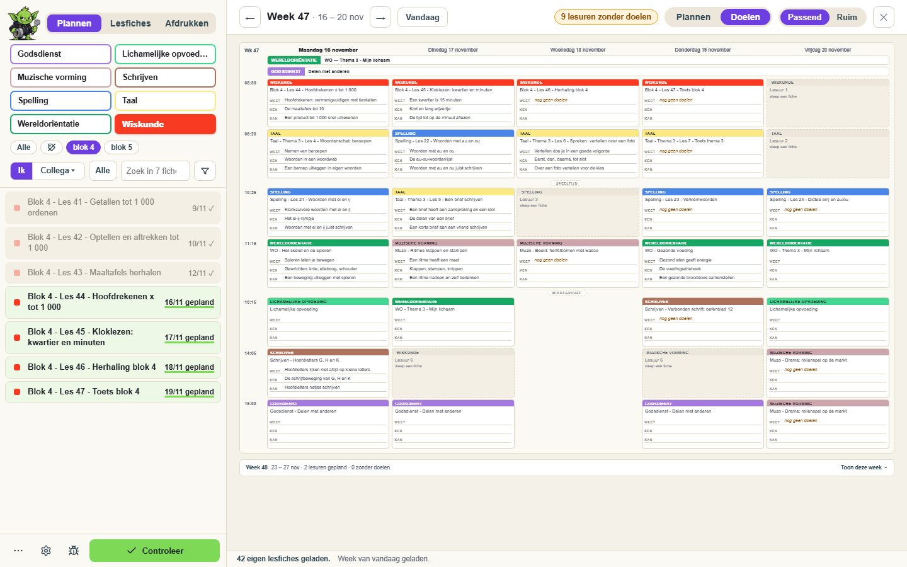
Doelen: per les WEET, KEN en KAN
Schakel bovenaan van Plannen naar Doelen: één week, en op elke kaart de WEET / KEN / KAN-doelen van de lesfiche. Bovenaan staat hoeveel lessen nog geen doelen hebben. De doelen staan in de lesfiche zelf, dus ook in Questi, op je andere computer en bij collega’s met wie je de fiche deelt.
Lesfiches
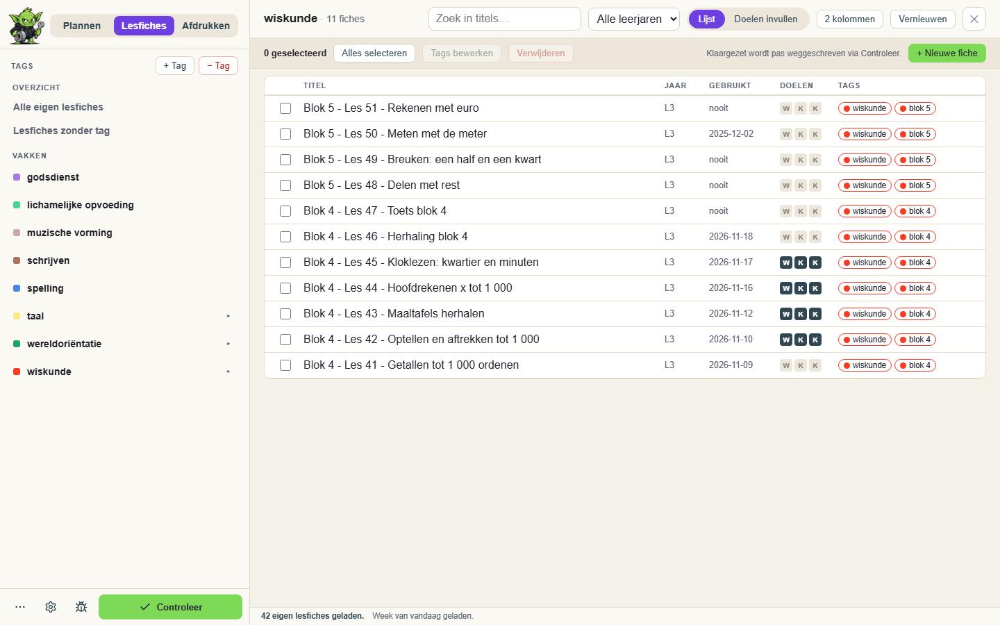
Lesfiches: tagboom links, je bibliotheek als tabel
Links je tags als boom. Met ✎ hernoem of herkleur je een tag, of hang je hem onder een ander vak; + Tag maakt een nieuwe.
Rechts een tabel met titel, leerjaar, laatst gebruikt en tags. Klik een kolomkop om te sorteren; klik een titel om ze aan te passen.
Meerdere tegelijk: vink fiches aan en kies Tags bewerken of Verwijderen (definitief: je typt eerst VERWIJDER en er wordt een back-up gedownload).
Lesdoelen invullen maakt van de lijst een invulblad: per fiche Titel · WEET · KEN · KAN. Tab = volgend vak, Enter = volgende fiche.
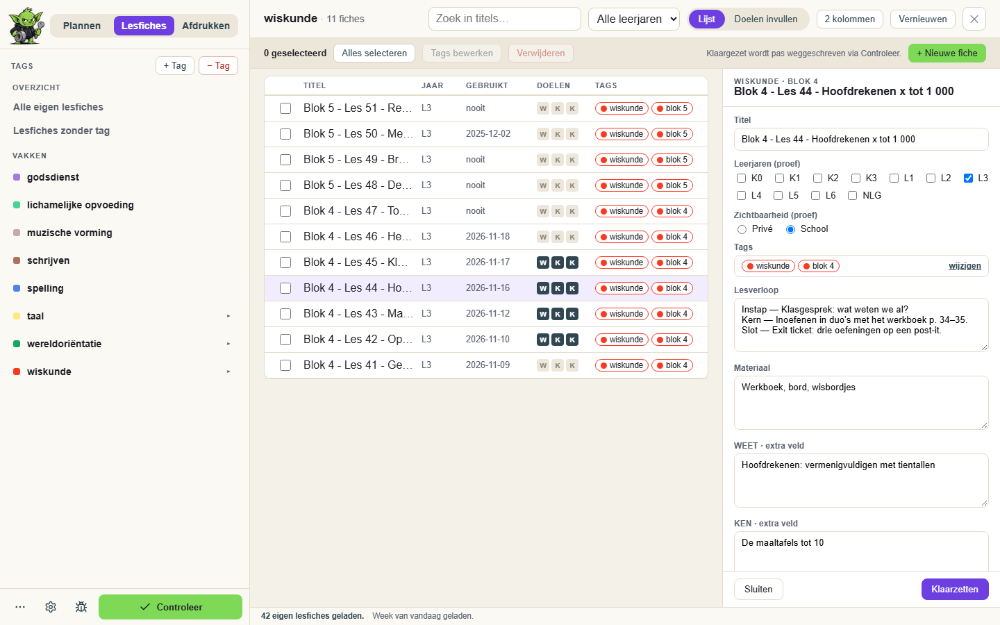
De volledige editor van één lesfiche
Dubbelklik een fiche voor de volledige editor: titel, leerjaren, zichtbaarheid, tags, alle tekstvelden en WEET/KEN/KAN. + Nieuwe fiche maakt een fiche zonder de editor van Questi, met de echte Op.Stap-kiezer voor de leerplandoelen. Ook hier gaat alles via dezelfde Controleer.
Afdrukken
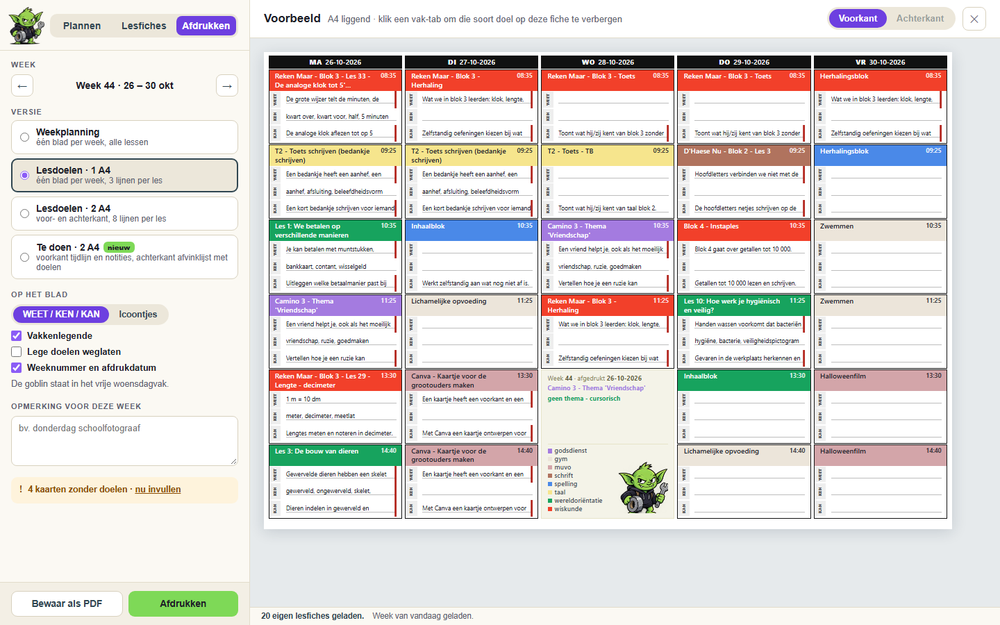
Afdrukken: Lesdoelen-versie op A4
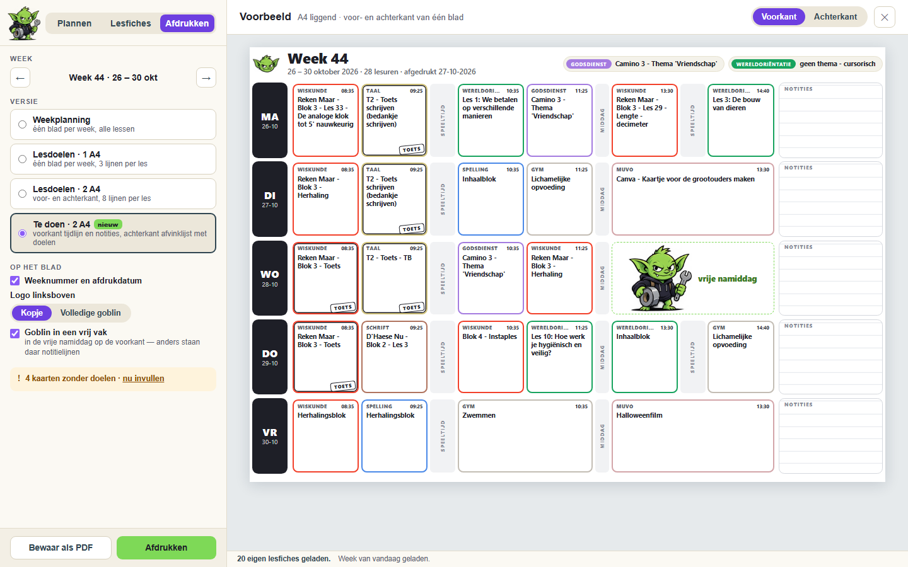
Te doen: je week als tijdlijn (voorkant)
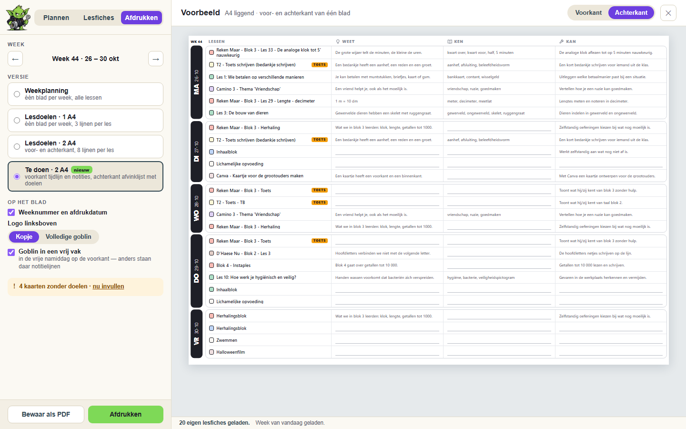
Te doen: per les WEET, KEN en KAN, met een schrijflijn waar een doel ontbreekt (achterkant)
Versie: Weekplanning (je hele week op één blad, kaartjes in je vakkleuren), Lesdoelen op 1 of 2 A4 (schrijflijnen voor WEET, KEN en KAN; de goblin in het vrije woensdagvak) of Te doen · 2 A4 (nieuw: voorkant je week als tijdlijn met je echte begintijden en per dag een vak Notities; achterkant per dag een afvinklijst met de WEET, KEN en KAN van elke les, en een schrijflijn waar een doel nog ontbreekt; toetsen herkend aan het woord ‘toets’ in de titel).
Op het blad: weeknummer en datum, legende, het logo linksboven (kopje of volledige goblin) en eventueel de goblin groot in een vrij vak (bij Te doen: de vrije namiddag, anders notitielijnen).
Kies wat er op het blad komt, druk andere agenda’s mee af (bv. die van de zorgjuf) en voeg een opmerking voor deze week toe.
Bewaar als PDF of Afdrukken opent het afdrukvenster van je browser. Het blad toont wat in Questi staat, niet wat nog klaargezet is.
Instellingen
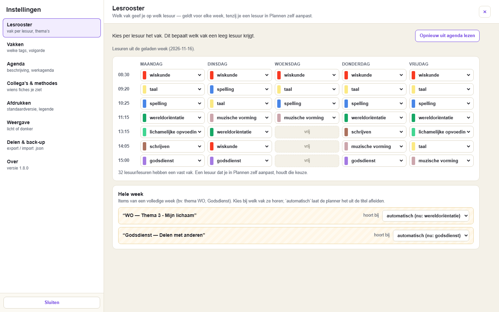
Instellingen: het lesrooster
Lesrooster (welk vak op welk lesuur), Vakken, Agenda, Collega’s & methodes, Afdrukken, Weergave (licht of donker) en Delen & back-up: je instellingen als bestand bewaren of overnemen van een collega — vakken gaan mee op naam en kleur.
Methodevoortgang
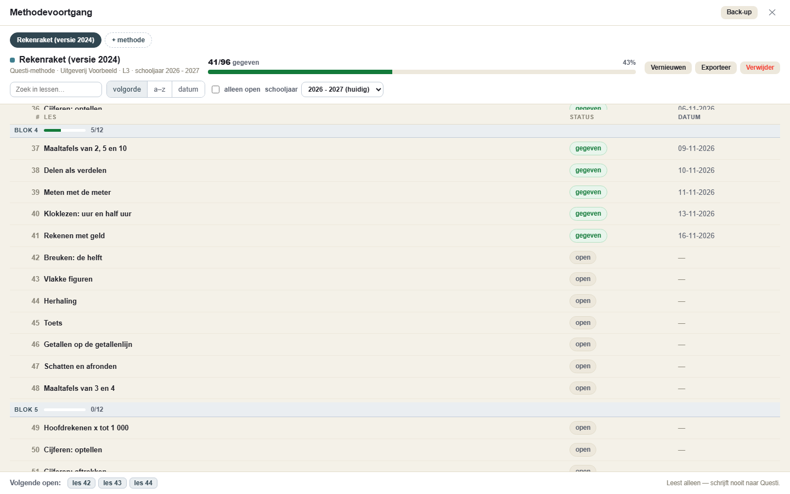
Methodevoortgang: welke lessen al gegeven zijn
Via Alles → Methodevoortgang. Per methode zie je welke lessen je dit schooljaar al gaf en welke nog open staan, per thema, met de overgeslagen lessen. Een methode komt uit Questi of uit je eigen lesfiches. Het leest alleen: er wordt niets naar Questi geschreven.
Bijwerken
Is er een nieuwe versie, dan meldt PatchGoblin dat zelf. Bijwerken:
Open de map %LOCALAPPDATA%\PatchGoblin (plakken in de adresbalk van Verkenner) en dubbelklik update.bat. Het controleert de download eerst en maakt een back-up van je vorige versie (in %LOCALAPPDATA%\PatchGoblin-backups); lukt het vervangen niet, dan zet het die vanzelf terug.
Klik op de extensiepagina bij PatchGoblin op het pijltje ↻ (opnieuw laden).